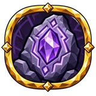
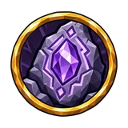
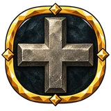
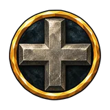
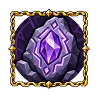

Рунная ковка¶
Рунная наковальня: здесь предмет снаряжения перерабатывают сплавами и глифами. Каждое действие тратит потенциал предмета и азуритовую пыль. Без главного глифа действие перековывает предмет заново; сплавы направляют, какие свойства он получит, глифы меняют предмет или правила действия. Сплавы выплавляют из особых руд.
Наковальня¶
Рунная наковальня строится молотом рядом с верстаком. Её ступени открывают ячейки для сплавов и глифов (Рунная наковальня: 1, Железные тиски: 2, Серебряная матрица: 3); Рунные тиски добавляет одну вашу собственную, всего до 4.
Её запас хранит сплавы, глифы, азуритовую и божественную пыль, по одной ячейке на каждый вид без ограничения количества: Ctrl+клик переносит одну штуку между запасом и ячейками. Одной наковальней могут пользоваться несколько игроков сразу и видеть выбор друг друга.
Потенциал¶
Потенциал: у каждого предмета снаряжения, который может иметь редкость, его не больше 65, какой бы ни была редкость; у предмета, который ещё не бывал на наковальне, он полный. Префикс #% increased item potential поднимает предел: 65 × (1 + увеличение), с округлением. Предмет помнит, сколько потратил, поэтому остаток следует за пределом, когда этот префикс появляется, уходит или меняется. У уникальных предметов, самоцветов (кроме базовых), рун и предметов с фиксированной редкостью его нет. Предмет должен быть опознан и не осквернён. Потраченный потенциал ничто не восстанавливает.
Цена действия¶
Действие на наковальне стоит только потенциал глифов в нём: сплавы ничего не стоят, а действие без глифов не тратит потенциал. Ещё оно стоит 30 ед. (Азуритовая пыль) плюс пыль каждого сплава и глифа; ценные и очень ценные глифы также берут Божественная азуритовая пыль. Пыль берётся сначала из запаса наковальни, остальное — из сумки; сплавы и глифы берутся из запаса.
критическая ковка = ⌈стоимость ÷ 2⌉
Критическая ковка стоит половину потенциала с округлением вверх. Её шанс 5%, плюс узлы рунного ремесла на древе ремесла, которые ещё и снижают цену.
С глифом «Глиф отсрочки» 30% действий не тратят потенциал вовсе; критическая ковка проверяется, только если это не сработало. Пыль, сплавы и глифы тратятся в любом случае.
Действию нужна вся его цена в оставшемся потенциале предмета. С мастерством «Последний штрих» хватает любого остатка, и предмет приходит к нулю. На нуле рунное ремесло закрыто; предмет продолжает работать.
| Сплавы и глифы (потенциал) | Цена | Критическая ковка | Действий из полного потенциала |
|---|---|---|---|
| 3 | 3 | 2 | 21 |
| 5 | 5 | 3 | 13 |
| 10 | 10 | 5 | 6 |
| 20 | 20 | 10 | 3 |
| 35 | 35 | 18 | 1 |
Ковка¶
Действие без главного глифа перековывает предмет: все префиксы и суффиксы заменяются, предмет становится редким (редкость) с 3 префиксами и 3 суффиксами. Запечатанное свойство остаётся. Подходящих предмету свойств должно хватать на полную ковку. Сплавы действуют только здесь.
Как сплавы смещают выпадение¶
Каждый сплав поддерживает свойства своей темы. Для предмета на наковальне игра берёт долю s веса пула ковки, которую занимают эти свойства, и умножает их вес так, чтобы они составили около 35% выпадений:
| Доля темы в пуле | Множитель | Доля со сплавом |
|---|---|---|
| 1% | ×25 | 20.16% |
| 2% | ×25 | 33.78% |
| 5% | ×10.23 | 35% |
| 10% | ×5 | 35.71% |
| 20% | ×5 | 55.56% |
| 40% | ×5 | 76.92% |
Свойство из тем нескольких сплавов складывает их множители: 1 + (×₁ − 1) + (×₂ − 1)…, то есть не меньше ×9 с двумя сплавами и ×13 с тремя (по ×5).
Глиф глубин: свойства с весом 300 и меньше, редкие, выпадают в ×3 чаще, поверх сплавов.
Сплав без единого свойства для этого предмета использовать нельзя: наковальня об этом скажет, и ничего не потратится. Подсказка кнопки «Ковать» показывает долю каждого сплава до и после.
Правила глифов¶
Один главный глиф на действие заменяет ковку своим изменением. Вспомогательные глифы меняют, как выпадает действие или сколько оно стоит:
| Глиф | Вид | Работает с | Эффект |
|---|---|---|---|
| Главный | вместо ковки | +1 постоянного качества; свойства сохраняются | |
| Вспомогательный | ковка | Ковка даёт 4 свойства вместо 6, по одному меньше с каждой стороны; лучший доступный тир вдвое вероятнее | |
| Вспомогательный | ковка, Глиф закалки, Глиф последнего жара | Значения свойств бросаются внутри тира дважды, остаётся лучшее | |
| Вспомогательный | ковка | Редкие свойства втрое вероятнее | |
| Вспомогательный | любое действие | 35% сохранить каждый другой сплав и глиф действия; сам глиф тратится всегда | |
| Главный | вместо ковки | 25% добавить призрачное гнездо сверх предела гнёзд | |
| Вспомогательный | ковка | Ковка сохраняет одно случайное прежнее свойство | |
| Главный | вместо ковки | Снимает один случайный префикс | |
| Главный | вместо ковки | Снимает один случайный суффикс | |
| Главный | вместо ковки | Снимает все префиксы и суффиксы; всё прочее в предмете сохраняется | |
| Главный | вместо ковки | Снимает одно свойство самого слабого тира | |
| Главный | вместо ковки | Одно случайное свойство поднимается на тир | |
| Главный | вместо ковки | 50%: все свойства поднимаются на тир. Иначе весь оставшийся потенциал выгорает | |
| Вспомогательный | любое действие | 30% не потратить потенциал действия | |
| Главный | вместо ковки | +5 к уровню предмета, до наибольшего | |
| Главный | вместо ковки | Наибольшая прочность ×1,25 с каждым применением; доля износа сохраняется |
- Глиф эха: каждый другой сплав и глиф действия сохраняется с шансом 35%; сам глиф эха тратится всегда. Ему нужен ещё один сплав или глиф.
- Глиф пустоты: шанс 25% на призрачное гнездо; цена платится в любом случае. Предмет должен уметь иметь гнёзда.
- Глиф последнего жара: с шансом 50% каждое свойство, которое может подняться на тир, поднимается; иначе весь оставшийся потенциал предмета сгорает.
- Глиф возвышения: +5 к уровню предмета, до 246, уровня Глубокого Севера.
- Упрочняющий глиф: максимальная прочность ×1.25 за каждое применение (считается до 40 применений); доля прочности предмета сохраняется.
- Глиф трёх узлов: ковка даёт 2 префикса и 2 суффикса; лучший доступный предмету тир выпадает в ×2 чаще.
- Глиф памяти: ковка сохраняет одно случайное свойство предмета.
- Отсеивающий глиф: убирает свойство самого слабого тира, случайное из равных.
- Запечатанное свойство никогда не убирается и не меняется; глиф очищения отклоняется на предмете с таким свойством.
Что не получится¶
Наковальня проверяет действие до оплаты. Если подходит одно из этого, действие отклоняется с причиной, и ничего не тратится:
- В одном действии только один главный глиф
- Каждый сплав и глиф - не больше одного раза за действие
- На этой наковальне не хватает открытых ячеек
- Сплавы меняют только ковку: уберите их или главный глиф
- У сплава «…» нет свойств для этой вещи
- Этот глиф работает только при ковке
- Глифу Норн нужно действие, которое бросает значения свойств
- Глифу эха нужен другой сплав или глиф, который он сохранит
- Глифу памяти нужно свойство, которое он сохранит
- У предмета не осталось потенциала
- Не хватает потенциала: нужно …, осталось …
- Уникальные предметы не куются рунами
- Этот предмет не куётся рунами
- Этот предмет не может стать редким
- Этому предмету не хватает подходящих свойств для полной ковки
- У этого предмета не бывает гнёзд
- Ни одно свойство не может подняться на тир при этом уровне предмета
- Предмет уже на наибольшем уровне
- У этого предмета нет прочности
- Запечатанное свойство снять нельзя
- У самоцветов нет качества
- На утилитарных предметах качество ничего не даёт
Призрачное гнездо¶
Глиф пустоты может открыть призрачное гнездо сверх обычного предела гнёзда предмета. Оно принимает то же, что обычное гнездо, и сохраняется при пробойниках, перековке и починке.
На древе ремесла¶
Узлы и мастерства Резчика рун для рунного ремесла:
| Название | Тип | Эффект | |
|---|---|---|---|
 |
Rare affixes | Средний узел ремесла | 10% увеличение редкость свойств при рунном ремесле |
 |
Rare affixes | Узел ремесла ×3 | 4% увеличение редкость свойств при рунном ремесле |
 |
Higher affix tiers | Средний узел ремесла | 10% увеличение rune-crafted тир аффиксов |
 |
Higher affix tiers | Узел ремесла ×3 | 4% увеличение rune-crafted тир аффиксов |
| Рунная ковка | Узел ремесла ×3 | +2% шанса, что руническое действие потратит половину потенциала 2% уменьшение цены рунических действий в потенциале |
|
| Рунная ковка | Средний узел ремесла | +5% шанса, что руническое действие потратит половину потенциала 5% уменьшение цены рунических действий в потенциале |
|
 |
Ascendant Rune | Вариант мастерства ремесла | +10% шанс, что свойство, добавленное руной, поднимется на ступень When a rune adds or raises a property, it has a chance to rise one tier more as a separate step, beyond the item's level limit. You see a second flash, hear a chime and read "+1 affix tier". |
| Perfect Inscription | Вариант мастерства ремесла | +10% шанс, что свойство, выпавшее от руны, получит наибольшее значение своей ступени A property rolled by a rune (Fate included) has a chance to take the highest value of its tier. |
|
| Последний штрих | Вариант мастерства ремесла | Рунический крафт может тратить больше потенциала, чем осталось, пока он больше нуля; остаток обнуляется. | |
| Рунные тиски | Вариант мастерства ремесла | +1 вместимости при рунном ремесле Ещё одна ячейка сплава или глифа на Рунной наковальне сверх её собственных. |
Данные из Path of Valheiman 6.0.12, извлечены 2026-11-13.